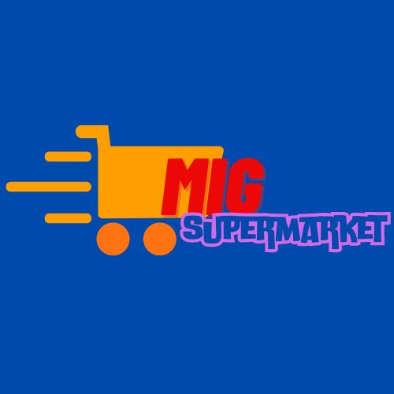
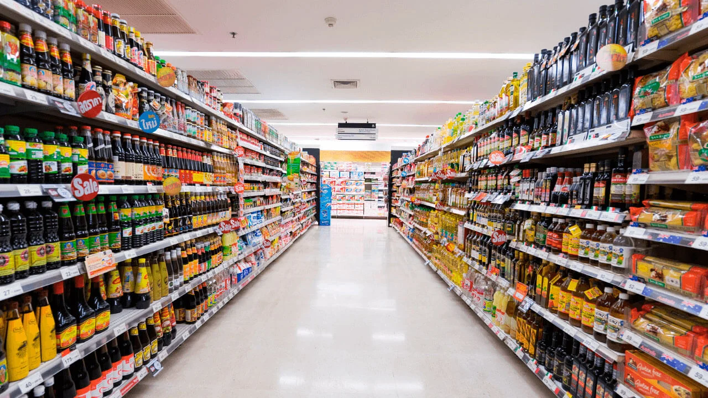

MIG SUPERMARKET
SOBRE

HISTÓRIA
O MIG SUPERMARKET, é uma empresa que surgiu em 1983 idealizada pelos irmãos Flávio Cardinne e Fernando Cardinne.
O começo foi com uma pequena mercearia na zona norte da capital mineira. Doze anos depois já é uma rede de 23 mercearias e 62 funcionários.
O empreendimento, então, passa a ser uma sociedade por ações e se transforma em um supermercado de sucesso e vive um período de grande expansão. A empresa, desde sua fundação, esteve focada nos clientes das classes C, D e E. Em 1.996, decidiu atuar em outro nicho de mercado, que é clientela das classes A e B. Surge, então, um novo conceito de supermercado.